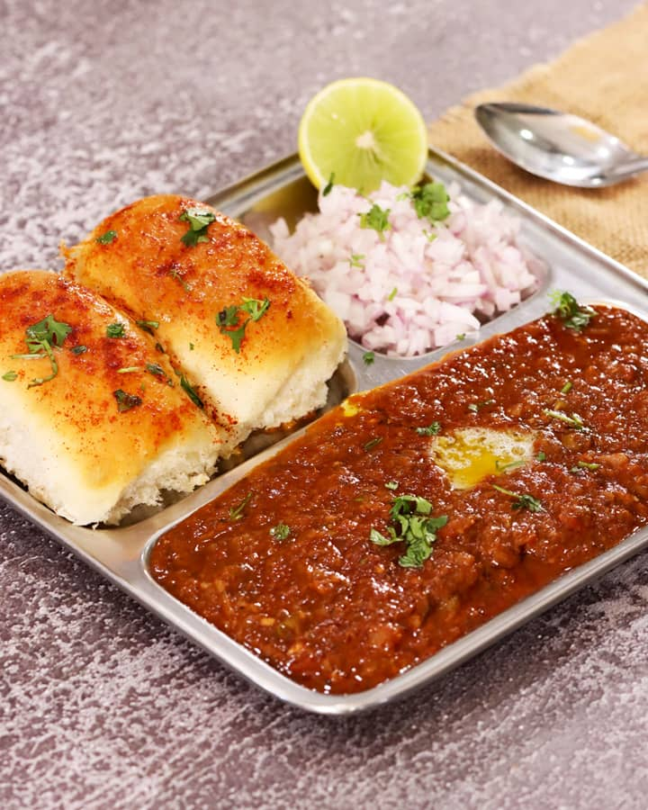

Pav Bahji

Description
Pav Bhaji is a delicious street food from Mumbai. It is a blend of spicy mashed vegetables served with butter toasted buns.
Ingredients
- Potatoes - 3-4 medium , boiled and mashed
- Cauliflower - 1 cup , finely chopped
- Green Peas - 1/2 cup
- Carrot - 1-2 medium , chopped
- Onions - 2 medium , finely chopped
- Capsicum - 1 finely chopped
- Tomatoes - 34 large , pured
- Ginger-garlic Paste - 1 tablespoom
- Turmeric Powder - 1/2 tanlespoon
- Red chilli powder - 1 tanlespoon
- PavBhaji Masala - 2-3 tanlespoon
- Salt - to taste
- Green Chillies - 1-2 finely chopped
- Butter - 2-3 tablespoon
- Water - as needed
- Cilantro - for garnish
- Lemon - for serving
- Pav buns - 4 for single serving
Steps
- Boil potatoes, cauliflower, peas, and carrots until soft.
- Lightly mash the boiled vegetables and set aside
- Finely chop onions, tomatoes, capsicum, and green chilies.
- Heat butter in a pan and sauté chopped onions until golden.
- Add ginger-garlic paste and sauté for a minute.
- Add chopped tomatoes and cook until soft and mushy.
- Add chopped capsicum and cook for 2-3 minutes
- Mix in pav bhaji masala, red chili powder, turmeric, and salt.
- Add mashed vegetables and mix well with the masala.
- Mash everything together to combine flavors.
- Add water as needed and simmer for 10-15 minutes.
- Add a knob of butter and garnish with chopped coriander.
- Heat butter on a tawa and sprinkle a little pav bhaji masala.
- Slit pav buns and toast them on both sides until golden.
- Serve bhaji hot with buttered pav, lemon wedges, and chopped onions.
Home